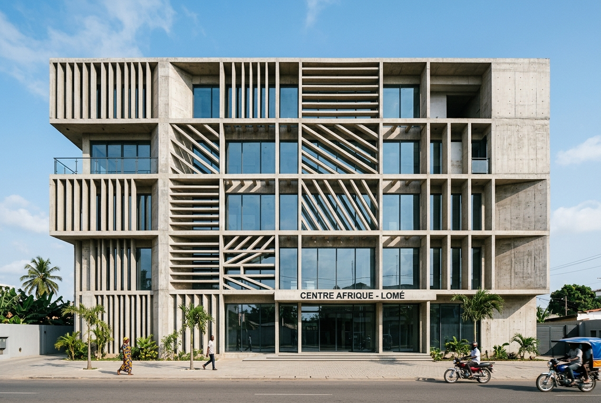
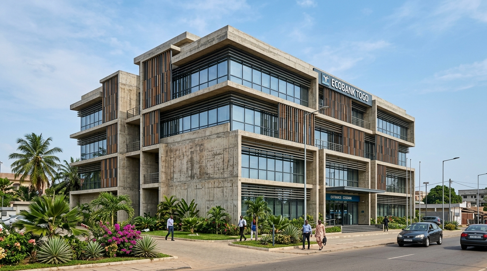

Immeuble de bureaux Tokoin.
- Lieu
- Lomé, Tokoin
- Année
- 2022
- Programme
- Bâtiment tertiaire
- Mission
- Conception
- Dimension
- 1 800 m², R+4
Immeuble à plateaux libres, protégé du soleil par un brise-soleil en béton.
Quatre niveaux de plateaux libres, distribués par un noyau central, permettent d'aménager les bureaux selon les besoins de chaque occupant. La façade la plus exposée est doublée d'un brise-soleil en béton qui filtre la lumière sans fermer les vues.
Le cabinet a conçu le bâtiment et coordonné les études techniques.



1/3